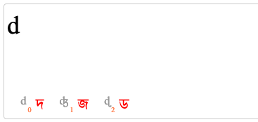
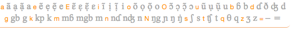
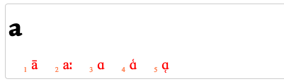

Updated 27-Nov-2019 • tags apps, pickers, latn-afr
This Unicode character app allows you to produce, analyse or manipulate runs of African text using the Latin script. Character apps are especially useful for people who don't know a script well, as characters are displayed in ways that aid identification.
If something is broken or missing raise an issue. For version information see the Github commit list. The pictures of the UI used in this page are taken from a variety of character apps.
Includes or enables composition of characters used by 169 African languages in the Character Usage app, plus additional characters in the Pan-African Reference Alphabets from 1978 and 1982. Further characters were added after discussions with and suggestions from Don Osborne, Niel Patel, Charles Riley, and José Scaglione.
The total number of combinations of diacritics and base characters is quite large, so the app provides separate base and diacritics. However, by default, the app will automatically compose these characters into precomposed forms as you type.
Type assist. Allows you to generate text from QWERTY input. This can also be switched on/off by hitting the ` (backquote) key, but it is on by default when you open the character app.
You should find that very little practise is needed to learn to enter text quickly. This method is much faster than picking items from the selection area below.
When there are alternatives, the app will allow you to select characters from a list. For each alternative you'll see the character to be inserted in red. To its left you'll see the transliteration for that character (in grey, above), and the number key to press (in orange, below) to insert the character into the text box. You can also just tap on the character (often more useful when using hand-held devices).

This sets up the Transcription type-in mode, which means two things:
More Latin characters. Displays a panel of Latin characters you are likely to need for typing African text. This can also be switched on/off by hitting the ~ (tilde) key.

As you type the orange characters, suggestions for input will appear at the bottom of the text area. To insert one of those items into the text area at the cursor position, type the appropriate number key, or tap directly on the item you want to insert. The character you typed will be replaced by the item you selected. (If you already see the character you want, just continue typing.)

Because this sets up the Latin type-in mode, alternative characters are only inserted after you click on a number key.
In general, alternative characters are associated with a key on the keyboard that resembles them when displayed - eg. ɣ will usually be brought up by clicking on the 'y' key (rather than, say 'g').